Working with the plant navigation view
The Project tree contains one or more plants and their components on one automation station.
Open an element in the Programming editor
- In the Project tree, do one of the following:
- Double-click an element, e.g., an extract air fan.
- Right-click an element and select Open.
- The element opens in the Programming editor.
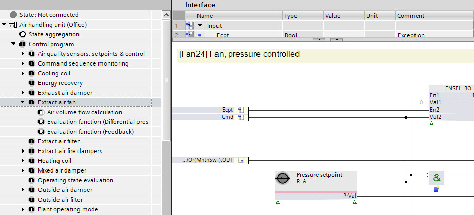
Programming editor
Duplicate an element
- Right-click an element in the Project tree and select Duplicate.
- The element is duplicated in the Project tree.
Delete an element
- Right-click an element in the Project tree and select Delete.
- The element is deleted from the Project tree.
Note:The element is not deleted in the Programming editor.
Add an element from the project tree to the Programming editor
- Drag an element from the Project tree to the Programming editor.
- The element appears in the Programming editor.
Programming editor
Navigate to an element in the Programming editor
- Right-click an element in the Project tree and select Show in program.
- The element is selected in the Programming editor.
Programming editor
Open the I/O configuration folder
- Right-click an element in the TX & Onboard I/Os folder in the Project tree and select Go to engineering.
- The I/O configuration task opens in ABT Site.
I/O configuration
Open the Modbus task
- Right-click an element in the Modbus folder in the Project tree and select Go to engineering.
- The Modbus task opens in ABT Site.
Modbus
Open the KNX PL-Link task
- Right-click an element in the PL-Link folder in the Project tree and select Go to engineering.
- The KNX PL-Link task opens in ABT Site.
KNX PL-Link
Open the BACnet references task
- Right-click an element in the BACnet references folder in the Project tree and select Go to engineering.
- The BACnet references task opens in ABT Site.
BACnet references
Open BACnet objects from the BACnet folder
- Right-click an element in the BACnet folder in the Project tree and select Go to engineering.
- It takes you to the task where the data point was added.
BACnet objects
Add a folder inside the BACnet folder
- Open the BACnet folder in the Project tree.
- Right-click BACnet.
- The Add new folder dialog box opens.
- In the Description field, enter the description for the folder.
- In the Name field, enter the name for the folder.
- In the Extension field, select the extension name for the folder.
- In the Graphics field, select the graphic that you require from the list.
- Click OK.
- A new folder is created under the BACnet folder in the Project tree.
To add more folder levels, select and right-click the folder for which you want to add the folder level and repeat steps 3 to 7.
INFO: Folders can also be automatically added / managed by showing a program block on BACnet. For more information, see
Show data on BACnet.
Delete a folder inside the BACnet folder
- In the BACnet folder, select the sub-folder you want to delete.
- Right-click the folder and select Delete.
- You have deleted the selected folder.
INFO: Automatically managed folders cannot be deleted manually, they must be removed from the owning program block. For more information, see
Show data on BACnet.
Delete unused I/Os within a manually created folder
- You have manually created a folder in the BACnet folder and have linked TX-I/Os to it.
- Select the folder that you want to delete under the BACnet folder.
- Right-click the folder and select Delete.
- The Delete folder window opens, requesting permission from the user to delete the unused I/Os in the folder.
- Click Yes.
- The folder under the BACnet folders gets deleted and its corresponding unused TX-I/Os get deleted from the TX & onboard I/Os folder under Resources folder.
Show the properties of an element
- Right-click an element in the Project tree and select Properties.
- The Properties dialog box opens.
- Select BACnet view.
- All element properties are listed.
- Note: Blue texts are customized texts for this project and do not have a reference text to the library.
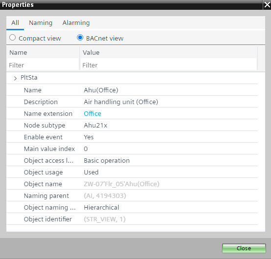
Element properties tab
Add a grouping object
- In the Project tree, select [Plant name] > Resources > Coordination.
Coordination folder - Double-click Add object.
- The Add Coordination object dialog box opens.
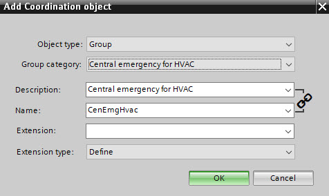
- In the Object type field, select Group manager.
- Complete the required fields.
- Click OK.
- A new grouping object is created in the Project tree.
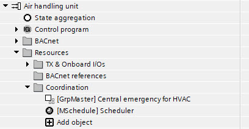
- Right-click the new created object and select Properties.
- Select the BACnet view option.
- Modify the group manager properties as required.
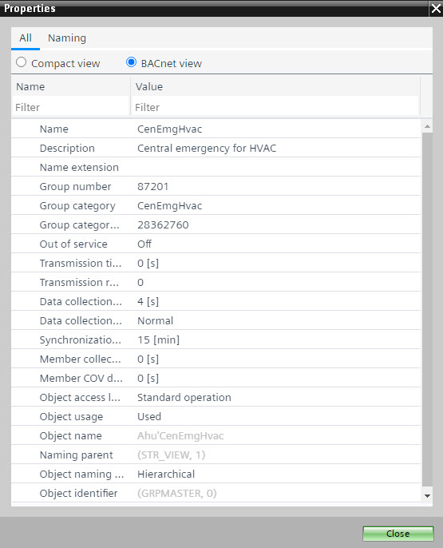
- Click Close.

The description and the name are linked, i.e., the description matches the name and vice versa. To unlink the description from the name, click the chain icon to the right of the Description and Name fields. To relink the description and the name, click the chain icon again.
Add a calendar object
- In the Project tree, select [Plant name] > Resources > Coordination.
Coordination folder - Double-click Add object.
- The Add Coordination object dialog box opens.
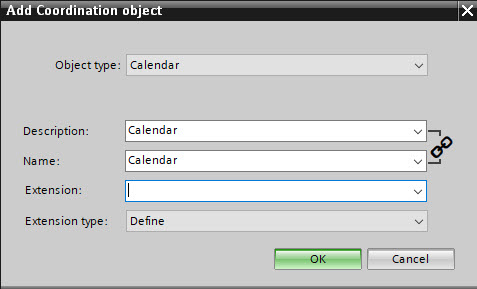
- In the Object type field, select Calendar.
- Complete the required fields.
- Click OK.
- A new calendar object is created in the Project tree.
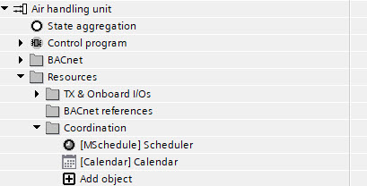
- Right-click the newly created object and select Properties.
- Select the BACnet view option.
- Modify the calendar properties as required.
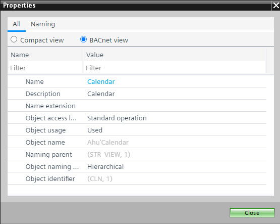
- Click Close.
- Right-click the calendar and select Properties.
- The Calendar opens.
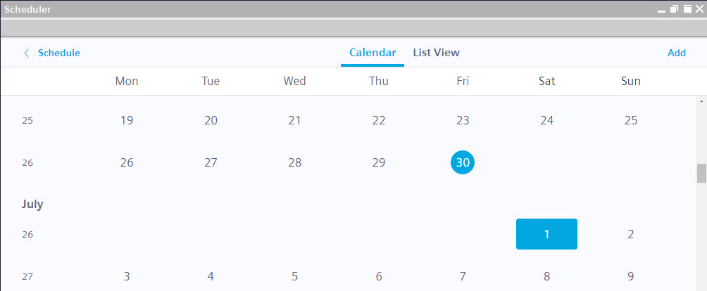
- Configure the calendar.
Exception schedules
The description and the name are linked, i.e., the description matches the name and vice versa. To unlink the description from the name, click the chain icon to the right of the Description and Name fields. To relink the description and the name, click the chain icon again.
Add a new plant to the project tree
- In the Devices toolbar, click Add plant.
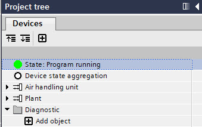
- The Add new plant dialog box opens.
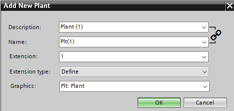
- Complete the required fields.
- Click OK.
- A new plant is created in the Project tree.
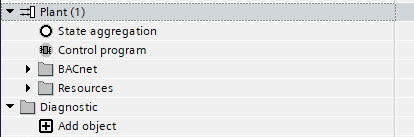
The description and the name are linked, i.e., the description matches the name and vice versa. To unlink the description from the name, click the chain icon to the right of the Description and Name fields. To relink the description and the name, click the chain icon again.
Add a plant from the library to the project tree
- Select the Library tab.
- Select a plant.
- Drag the selected plant from the Plants folder into the Project tree.
- The plant and all its components appear in the Project tree.
- (Optional) Right-click the plant in the Project tree, then select Show in program view to open it in the Programming editor.
Programming editor
Drag objects from the Object view to the Project tree
Situation:
If there are many objects in the Project tree, it can be difficult to move them to a different folder or perform an I/O replacement. To make this easier, the objects can be displayed in the Object view and moved them to the desired location in the Project tree.
- In the Object view, select the BACnet objects tab.
- (Optional) Use the table filter to reduce the object list.
- In the Project tree, select the folder into which the objects should be moved.
- In the Object view, select the desired objects (multi select is supported).
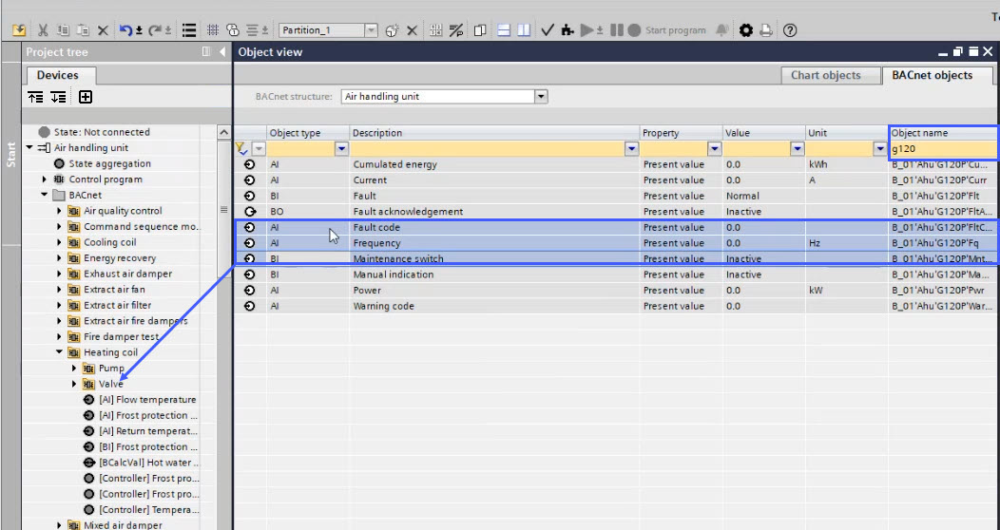
- Drag the objects from the Object view to the Project tree folder.
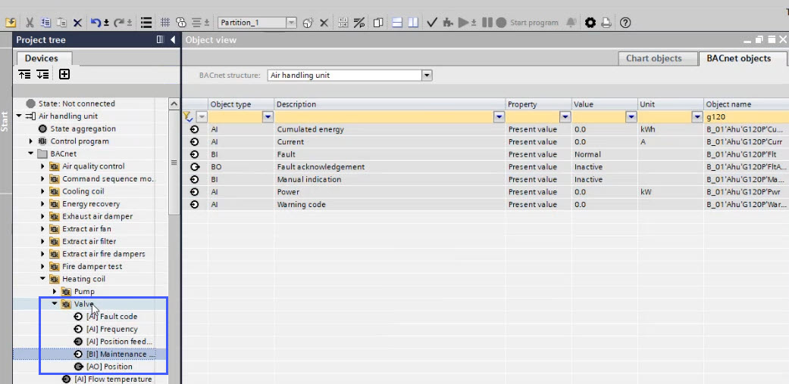
Delete I/O objects in the BACnet folder
Situation:
It is possible to delete I/Os as well as other BACnet objects directly in the BACnet folder structure. I/Os can also be deleted from the resources folder, but this might not be so easy, if there are more than two objects with the same name, for example, in the TX & onboard I/Os folder.
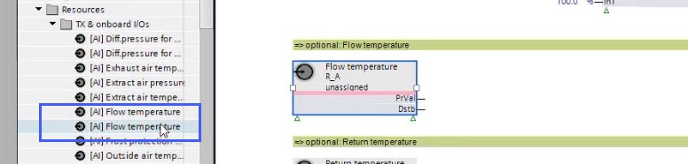
Delete I/O objects
- In the Project tree, select the BACnet folder and then the corresponding subfolder.
- Select the I/O object.
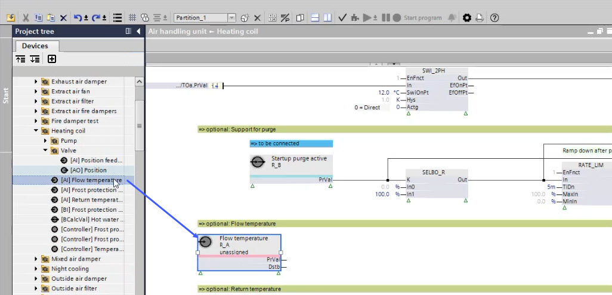
- Right-click and select Delete.
- The I/O object is deleted in the BACnet folder.
- The I/O object is deleted in the TX & onboard I/Os folder.
- The I/O object is deleted in the I/O configuration task of ABT Site.
- The I/O object is unassigned in the Programming editor for further use.
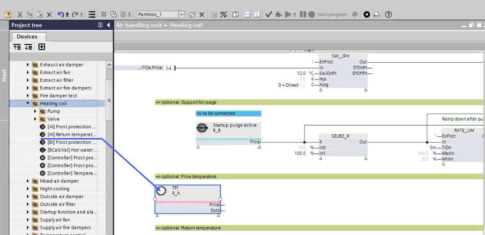
The XFB is not deleted in the program itself. Depending on the project configuration, it can be provided with a BACnet reference or deleted manually in the Programming editor.
Delete other BACnet objects
- In the Project tree, select the BACnet folder and then the corresponding subfolder.
- Select the BACnet object.
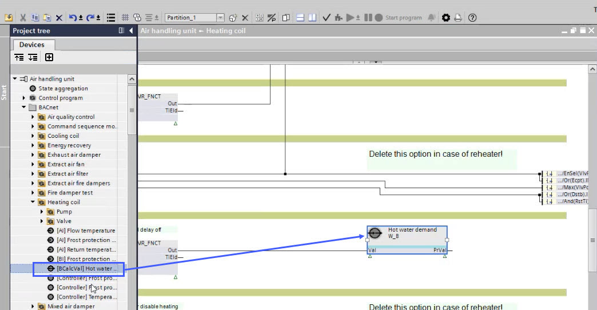
- Right-click and select Delete.
- The object is deleted in the BACnet folder.
- The object is unassigned in the Programming editor for further use.
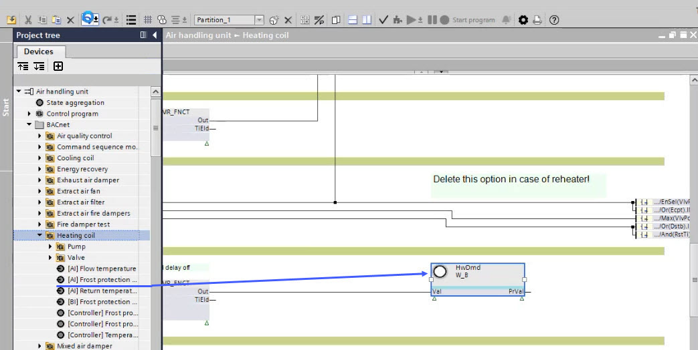
Delete unused hardware
Situation:
In order to avoid having to delete each hardware object individually in the Project tree, all underlying hardware objects can be deleted in a higher-level folder.
- Delete I/O objects in the control program.
- The hardware objects in the Project tree are visible as unused (white colored).
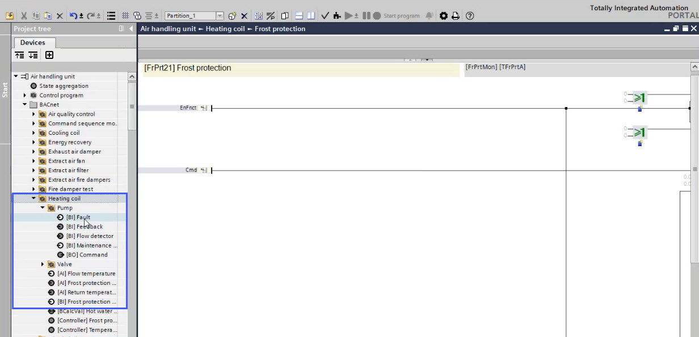
- Select a folder in the Project tree.
- Right-click and select Delete unused hardware.
- The unused hardware is removed from the BACnet folder.
- The unused hardware is removed from the TX & onboard I/Os folder.
- The unused I/O objects are deleted in the I/O configuration task of ABT Site.
- Unused data points from network field devices are not delete from the device, they are just removed from the BACnet folder hierarchy.
- Unused BACnet reference objects are deleted (comparable to TX & onboard I/Os).
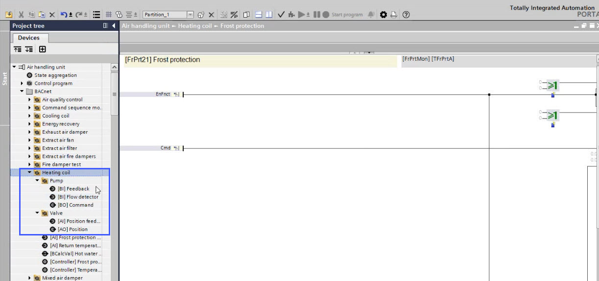
Delete all hardware
Situation:
The assigned hardware in the control program is no longer required or will be replaced by a BACnet reference.
- Select a folder in the Project tree.
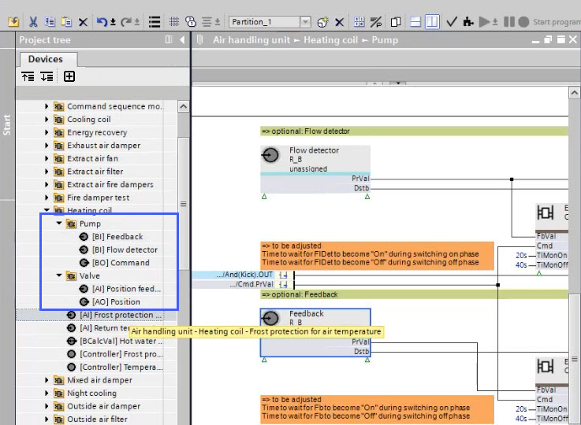
- Right-click and select Delete all hardware.
- The hardware is removed from the BACnet folder.
- The hardware is removed from the TX & onboard I/Os folder.
- The I/O objects are deleted in the I/O configuration task of ABT Site.
- Unused data points from network field devices are not delete from the device, they are just removed from the BACnet folder hierarchy.
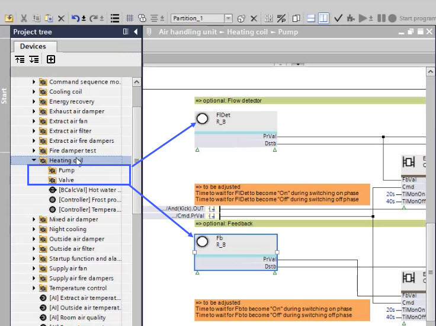
The XFB is not deleted in the program itself. Depending on the project configuration, it can be provided with a BACnet reference or deleted manually in the Programming editor.